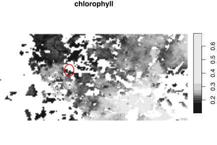
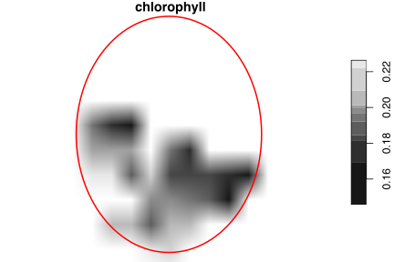
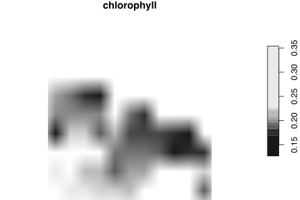

Spatial Localisation, Subsetting, and Aggregation of the Chlorophyll-a Data
An example analysis and workflow
![]()
This analysis uses the chlorophylla data downloaded in Retrieving Chlorophyll-a Data from ERDDAP Servers.
The purpose of this analysis is to extract chlorophyll-a (chl-a) data collocated with the position of whale sightings. The geographical locality of each whale sighting is used to define a centre point in the gridded chl-a dataset. This centre point is then expanded by a specified radius, and all the pixels located within the expanded area’s bounding box are then aggregated along the latitude and longitude dimensions. This is repeated for each whale sighting since the start of the chl-a record time period (i.e. since 2003-01-01).
1 Load libraries
I use tidyverse (of course) for basic data processing, lubridate for date calculations (specifically the ceiling of a pre-defined time interval such as week), and stars and sf for some specific geographical computations.
# devtools::session_info()2 Load the whale sightings data
These data are provided as CSV file and are easy to load:
3 Reading chlorophyll-a from CSV (RData)
Next I load the chlorophyll-a data. These data were downloaded as flat CSV file and stored in a more compact RData file. See 1_ERDDAP_download.html for information about the download process.
It is important that we are clear about the start times (especially) of the sightings dataset.
# chlorophyll-*a*
chlDir <- "/Users/ajsmit/Documents/R/R_in_Ocean_Science/_development/ERDDAP/"
load(paste0(chlDir, "MODIS_chl_data.Rdata"))
min(chl_data$time); max(chl_data$time)[1] "2003-01-01"[1] "2022-07-27"# for testing only (legacy code)
# chl_df <- chl_data |>
# dplyr::filter(time >= "2003-01-01") |>
# dplyr::mutate(date_ceiling = ceiling_date(time, unit = "week",
# week_start = 3)) |>
# dplyr::group_by(longitude, latitude, date_ceiling) |>
# dplyr::select(-time) |>
# dplyr::summarise(chlorophyll = median(chlorophyll, na.rm = TRUE), .groups = "drop")
#
# chl_date_df <- data.frame(date = unique(chl_df$date_ceiling))
# check! this must align with the first date of the whale sighting data after
# we calculate the date ceiling
# min(chl_df$date_ceiling); max(chl_df$date_ceiling)
# class(chl_df$date_ceiling)4 Reading chlorophyll-a from netCDF (alternative)
Note that we can also download (in 1_ERDDAP_download.html) the data in netCDF format, and load the netCDF directly as a stars object. In the future I’ll probably go this route because I like the convenience of netCDF. An example workflow is provided for the netCDF approach, but the subsequent analysis proceeds with the data loaded from CSV.
chl_nc <-
stars::read_ncdf(paste0(chlDir, "chl_data.nc"),
var = "chlorophyll",
proxy = TRUE)
# 'warp' to regular grid (for some reason it was not properly registered as a
# regular grid, even though it is one)
chl_st1 <- st_warp(chl_nc, crs = st_crs(4326))
# check the CRS
# st_crs(chl_st1)
# make a vector of proper dates
dates <-
as.Date(st_get_dimension_values(chl_st1, which = "time"),
format = "%Y-%m-%d")
# transform this to a vector of 'date floors'
# dates <- ceiling_date(dates, unit = "week")
# assign the proper dates to the coordinate dimension
chl_st1 <- st_set_dimensions(chl_st1, which = "time",
values = dates)5 Processing
Both the sightings and chlorophyll-a data have a date/time vector comprised of daily dates. But will they align after we calculate the weekly data?
The chlorophyll-a data are available since 2002-12-29 and the whale sighting data since much earlier. I will use 2003-01-01 as the date from which to calculate the date ceiling and thus align the datasets along the time dimension. Note that I also calculated the weekly chl-a medians.
I convert the dataframe to a stars object and do all subsequent calculations (subsetting, cropping, etc.) there. This seems to be a bit faster than working in a dataframe.
chl_st <- chl_data |>
dplyr::select(longitude, latitude, time, chlorophyll) |>
st_as_stars(dims = c("longitude", "latitude", "time"),
raster = "chlorophyll") |>
sf::st_set_crs(4326) |>
filter(time >= "2003-01-01") |>
aggregate(by = "7 days", FUN = median, na.rm = TRUE)
chl_st <- st_warp(chl_st, crs = st_crs(4326))
print(chl_st)stars object with 3 dimensions and 1 attribute
attribute(s), summary of first 1e+05 cells:
Min. 1st Qu. Median Mean 3rd Qu. Max. NA's
chlorophyll 0.101503 0.2204348 0.256319 0.2894689 0.3211997 2.784282 46694
dimension(s):
from to offset delta refsys x/y
x 1 191 -31.625 0.0421596 WGS 84 [x]
y 1 71 39.7777 -0.0421596 WGS 84 [y]
time 1 1022 2003-01-01 7 days Date chl_date_st <- data.frame(date = unique(st_get_dimension_values(chl_st, which = "time")))
min(st_get_dimension_values(chl_st, which = "time")); max(st_get_dimension_values(chl_st, which = "time"))[1] "2003-01-01"[1] "2022-07-27"I want to create a date ceiling for the sights date and I want to ensure that the week starts on a Wednesday (2003-01-01). I also want to ensure that the class of the date vector here is the same as that of the chl-a data (this last step is probably not necessary).
sights <- sights_data |>
filter(date >= "2003-01-01") |>
mutate(
date_ceiling = as.Date(ceiling_date(date, unit = "week",
week_start = 3))
) |>
select(-date) |>
arrange(date_ceiling)
# check! it aligns with the first date ceiling in the chl-*a* time series
min(sights$date_ceiling); max(sights$date_ceiling)[1] "2003-01-01"[1] "2022-05-11" [1] "2003-01-01" "2003-05-21" "2003-05-28" "2003-07-09" "2004-01-07"
[6] "2004-04-14" "2004-05-12" "2004-05-19" "2006-05-10" "2006-05-31"
[11] "2007-03-28" "2008-01-02" "2008-04-30" "2008-05-14" "2008-05-21"
[16] "2010-05-26" "2011-01-05" "2011-04-06" "2011-04-27" "2011-05-25"class(sights$date_ceiling)[1] "Date"For each line of the sightings data, I find the point of interest (longitude and latitude), add a buffer around it, and create a circular polygon that specifies the spatial extent around the point. This circular polygon will be used to crop the area of interest around each whale sighting on a particular date, and all the chl-a values in the pixels within the circular polygon will be aggregated.
# for testing...
# arbitrarily selecting the date at the 200th line in the sightings
# dataset
buffer <- 0.2
t_step <- 100
(date_val <- as.Date(sights$date_ceiling[t_step]))[1] "2015-04-15"# the coordinates for that particular whale sighting
lon_val <- sights$lon[t_step]
lat_val <- sights$lat[t_step]
# calculate the bounding box for the sighting
cir_pt <- sf::st_point(c(lon_val, lat_val))
cir_sfg <- sf::st_buffer(cir_pt, buffer) # approx. 22.2 km radius
cir_sfc <- sf::st_sfc(cir_sfg, crs = st_crs(4326))
cir_bbox <- sf::st_bbox(cir_sfc)Plot of the full data extent on the first day of the chl-a dataset, showing the area to be cropped and aggregated:

Cropped data within a circular sf geometry region (circular polygon) around central point:
plot(chl_st[cir_sfc][, , , 1], reset = FALSE)
plot(cir_sfc, col = NA, border = 'red', add = TRUE, lwd = 2)
Data within a rectangular bbox:
plot(chl_st[cir_bbox][, , , 1], reset = FALSE)
I extract the chl-a data within the sf geometry at the exact time step as that the whale sighting, and calculate their median value. The output is one value, which can be appended to to original sightings dataset, one value per line of whale sighting.
We also need to be able to calculate the median chl-a value at certain lags before the date of whale sightings. Because the data are aggregated to weeky values, we must ensure that the value provided to the lag argument is a multiple of 7 days (i.e. 7, 14, 21, 28, etc.). So, to accommodate the lag calculated for the full region (see 2_sightings.html), the value closest to 54 day is 8 weeks x 7 days = 56 days. In my function I will only allow the user to enter the number of full weeks as lags.
For example, the median chlorophyll-a concentration 8 weeks prior to the date on which the greatest number of cetaceans observations were made, within the bounding box for one particular observation, is:
# for testing only (legacy code)
# calculates the median chl-a value within bbox rectangle
# chl_conc <- chl_df |>
# filter(date_ceiling == date_val - as.difftime(0, unit = "weeks")) |>
# group_by(date_ceiling) |>
# filter(between(longitude, cir_bbox[['xmin']], cir_bbox[['xmax']]),
# between(latitude, cir_bbox[['ymin']], cir_bbox[['ymax']])) |>
# summarise(med_chl = median(chlorophyll, na.rm = TRUE))
#
# chl_conc# calculates median chl-a conc within a circle
chl_conc <- chl_st |>
filter(time == date_val - as.difftime(0, unit = "weeks")) |>
aggregate(by = cir_sfc, FUN = median, na.rm = TRUE) |>
as.data.frame()
chl_conc[1,3][1] 0.2370576Now I know how to do the data extraction and processing for one line in the sights dataset. The next trick is to do it line by line for the whole sights dataset, i.e. once for each whale sighting.
6 Make a function to apply
# for testing (legacy code)
# buffer <- 0.2
#
# # function for method applied to dataframe
# chl_calc <- function(df, lag = 0) {
# cir_bbox <-
# sf::st_bbox(st_sfc(st_buffer(st_point(
# c(as.numeric(df[1]), as.numeric(df[2]))
# ), buffer),
# crs = st_crs(4326)))
#
# chl_conc <- chl_df |>
# filter(date_ceiling == as.Date(df[["date_ceiling"]]) -
# as.difftime(lag, unit = "weeks")) |>
# group_by(date_ceiling) |>
# filter(between(longitude, cir_bbox[['xmin']], cir_bbox[['xmax']]),
# between(latitude, cir_bbox[['ymin']], cir_bbox[['ymax']])) |>
# summarise(med_chl = median(chlorophyll, na.rm = TRUE))
#
# return(chl_conc)
# }
# chl_calc_safe <- possibly(chl_calc, "Error")buffer <- 0.2
# function for method applied to stars object
chl_calc <- function(df, lag = 0) {
cir_sfc <-
st_sfc(st_buffer(st_point(
c(as.numeric(df[1]), as.numeric(df[2]))
), buffer),
crs = st_crs(4326))
chl_conc <- chl_st |>
filter(time == as.Date(df[["date_ceiling"]]) -
as.difftime(lag, unit = "weeks")) |>
aggregate(by = cir_sfc, FUN = median, na.rm = TRUE) |>
as.data.frame()
return(chl_conc[1,2:3])
}
chl_calc_safe <- possibly(chl_calc, "Error")Test the function on one line of sights:
chl_calc_safe(sights[1,], lag = 0) # works| time | chlorophyll |
|---|---|
| 2003-01-01 | 0.216853 |
Make each row of sights a unique list element and map the chl_calc function to each element in the list, list_rbind it into a dataframe:
chl_lag_0 <- sights |>
split(seq(nrow(sights))) |>
map(\(df) chl_calc_safe(df)) |>
list_rbind(names_to = "row.num") |>
mutate(row.num = as.integer(row.num))Combine the output with the original sights dataset and also add a column with months:
sights_chl_lag_0 <- sights |>
mutate(row.num = row_number()) |>
left_join(chl_lag_0, by = "row.num") |>
select(-row.num) |>
mutate(month = month(date_ceiling, label = TRUE, abbr = TRUE)) |>
rename(sight_date = date_ceiling,
chl_date = time)
head(sights_chl_lag_0)| lon | lat | sight_date | chl_date | chlorophyll | month |
|---|---|---|---|---|---|
| -29.39461 | 39.38061 | 2003-01-01 | 2003-01-01 | 0.2168530 | Jan |
| -27.97184 | 38.91912 | 2003-01-01 | 2003-01-01 | 0.1926668 | Jan |
| -28.37714 | 38.40140 | 2003-01-01 | 2003-01-01 | 0.1795655 | Jan |
| -28.63333 | 38.38333 | 2003-05-21 | 2003-05-21 | 0.2062395 | May |
| -28.66667 | 38.45000 | 2003-05-21 | 2003-05-21 | 0.1970190 | May |
| -28.36667 | 38.40000 | 2003-05-21 | 2003-05-21 | 0.2283610 | May |
Also do this with a lag of 8 weeks:
chl_lag_8 <- sights |>
split(seq(nrow(sights))) |>
map(\(df) chl_calc(df, lag = 8)) |>
list_rbind(names_to = "row.num") |>
mutate(row.num = as.integer(row.num))sights_chl_lag_8 <- sights |>
mutate(row.num = row_number()) |>
left_join(chl_lag_8, by = "row.num") |>
select(-row.num) |>
mutate(month = month(date_ceiling, label = TRUE, abbr = TRUE)) |>
mutate(diff.time = date_ceiling - time) |> # check
rename(sight_date = date_ceiling,
chl_date = time)
head(sights_chl_lag_8)| lon | lat | sight_date | chl_date | chlorophyll | month | diff.time |
|---|---|---|---|---|---|---|
| -29.39461 | 39.38061 | 2003-01-01 | NA | NA | Jan | NA days |
| -27.97184 | 38.91912 | 2003-01-01 | NA | NA | Jan | NA days |
| -28.37714 | 38.40140 | 2003-01-01 | NA | NA | Jan | NA days |
| -28.63333 | 38.38333 | 2003-05-21 | 2003-03-26 | 0.373149 | May | 56 days |
| -28.66667 | 38.45000 | 2003-05-21 | 2003-03-26 | 0.359063 | May | 56 days |
| -28.36667 | 38.40000 | 2003-05-21 | 2003-03-26 | NA | May | 56 days |
Above, sight_date is the date in the sightings dataset sights and chl_date is the earlier date (it may be lagged) at which the chl-a data were extracted (i.e. after incorporating the lag).
I am not too sure what to do with this output as there is actually no measured data associated with each observational record. The only thing of use really is that each row is one observation with an associated date and location. I assume that each row belongs with only one animal.
In order to create some observational data that are actually a bit more useful, I think it might be a good idea to create a column with the number of observations per day. The only way I can do this is to count the number of observations within a slightly larger spatial domain, and to do so, I regrid the observational data to a slightly courser resolution. So, at a resolution of, say, 0.2 × 0.2° latitude and longitude grid cells, I can count the number of observations within—now ‘observations’ are comprised of counts of point localities of individual observations for each day within these slightly expanded grid cells. This analysis is provided in the next file, 4_regrid_sights.html.
Consequently, I don’t actually do anything with the end result of the calculations provided within this script.
Reuse
Citation
@online{smit,
author = {Smit, AJ},
title = {Spatial {Localisation,} {Subsetting,} and {Aggregation} of
the {Chlorophyll-*a*} {Data}},
date = {},
url = {https://tangledbank.netlify.app/vignettes/chl_localisation.html},
langid = {en}
}